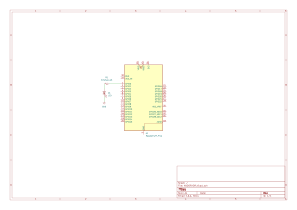
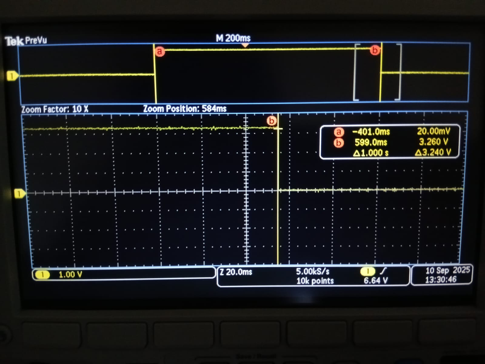
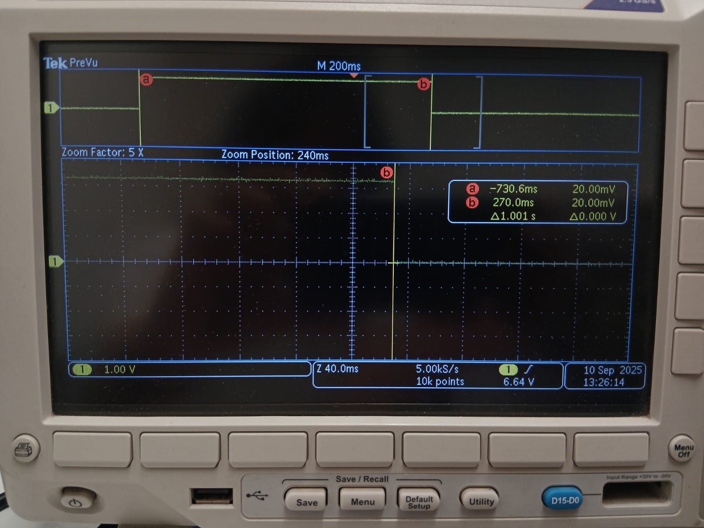

üìò Tarea 5 ‚Äî Ejercicios de medicion
Genera una onda cuadrada con ALARM0 en interrupción (ISR), con rearme acumulativo y periodo nominal definido. Luego compara modo µs vs modo ciclos (clk_sys) en el RP2350 (Pico 2).
1) Resumen
- Nombre del proyecto: Temporizador de sistema — ALARM0 y medición de jitter
- Autor: Carlos Ernesto Camacho González
- Curso / Asignatura: Sistemas Embebidos
- Fecha: 15/09/2025
- Descripción breve: Se usa el timer del sistema para alternar (toggle) un GPIO desde la ISR de ALARM0.
Consejo
2) Objetivos
- General: Generar una onda cuadrada estable con ALARM0 y caracterizar su jitter.
- Específicos:
- Implementar ISR de ALARM0 con rearme acumulativo.
- Medir periodo, jitter p-p y RMS con osciloscopio.
- Comparar precisión entre modo µs y modo ciclos (clk_sys).
3) Alcance y Exclusiones
- Incluye: GPIO, IRQ, system timer ALARM0, medición con osciloscopio.
- No incluye: PIO/PWM/DMA.
4) Requisitos
Hardware - Raspberry Pi Pico 2 (RP2350). - 1 LED + resistencia (o sólo el GPIO medido con sonda).
Conocimientos previos - Interrupciones, GPIO, y conceptos de jitter/RMS.
6) Código 1
// Blink con timer (SDK alto nivel): cambia BLINK_MS para ajustar
#include "pico/stdlib.h"
#include "pico/time.h"
#define LED_PIN 0 // <-- LED externo en GP0
static const int BLINK_MS = 500; // "toggle" cada 500 ms (periodo completo ~1 s)
bool blink_cb(repeating_timer_t *t) {
static bool on = false;
gpio_put(LED_PIN, on = !on); // toggle
return true; // seguir repitiendo
}
int main() {
stdio_init_all();
gpio_init(LED_PIN);
gpio_set_dir(LED_PIN, GPIO_OUT);
repeating_timer_t timer;
add_repeating_timer_ms(BLINK_MS, blink_cb, NULL, &timer);
while (true) {
tight_loop_contents(); // trabajo pesado va aquí, no en la ISR
}
}
7) Código 2
// Blink con timer de sistema (bajo nivel): ALARM0 + IRQ con rearme acumulativo
#include "pico/stdlib.h"
#include "hardware/irq.h"
#include "hardware/structs/timer.h"
#include "hardware/structs/sio.h"
#define LED_PIN 0 // <-- LED externo en GP0
#define ALARM_NUM 0 // usaremos ALARM0
// Número de IRQ asociado a ALARM0
#define ALARM_IRQ timer_hardware_alarm_get_irq_num(timer_hw, ALARM_NUM)
// próximo instante (en µs) en los 32 bits bajos del contador
static volatile uint32_t next_deadline;
// por defecto el timer cuenta en µs
static volatile uint32_t intervalo_us = 500000u; // <-- "toggle" cada 500 ms (periodo completo ~1 s)
void on_alarm_irq(void) {
// Limpia la IRQ de ALARM0 (write-1-to-clear)
hw_set_bits(&timer_hw->intr, 1u << ALARM_NUM);
// Toggle del LED
sio_hw->gpio_togl = 1u << LED_PIN;
// Rearme ACUMULATIVO (evita deriva si la ISR se retrasa)
next_deadline += intervalo_us;
timer_hw->alarm[ALARM_NUM] = next_deadline;
}
int main() {
stdio_init_all();
// LED de salida
gpio_init(LED_PIN);
gpio_set_dir(LED_PIN, GPIO_OUT);
gpio_put(LED_PIN, 0);
// Primer deadline
uint32_t now_us = timer_hw->timerawl; // 32 bits bajos (µs)
next_deadline = now_us + intervalo_us;
timer_hw->alarm[ALARM_NUM] = next_deadline;
// Enlaza e inicia IRQ
irq_set_exclusive_handler(ALARM_IRQ, on_alarm_irq);
hw_set_bits(&timer_hw->inte, 1u << ALARM_NUM);
irq_set_enabled(ALARM_IRQ, true);
while (true) {
tight_loop_contents();
}
}
7) Esquematico - Raspberry Pi Pico 2 (LED en GP1)
 Figura 1.
8) Resultados
Programa 1
-
Parámetro del timer: 1.000 s
-
Medición con cursores: Δt ≈ 1.001 s
-
Periodo completo de la onda: ≈ 2.002 s
 Figura 2. Medición con SDK alto nivel.
Programa 2
-
Parámetro del timer: 1.000 s
-
Medición con cursores: Δt ≈ 1.000–1.001 s
-
Periodo completo de la onda: ≈ 2.000–2.002 s
 Figura 3. Medición con ALARM0 + ISR.
9) Conclusiones rápidas
- Ambos métodos cumplen el periodo esperado; el desvío de ~+1 ms (~0.1%) está dentro del límite de medición de esa configuración.